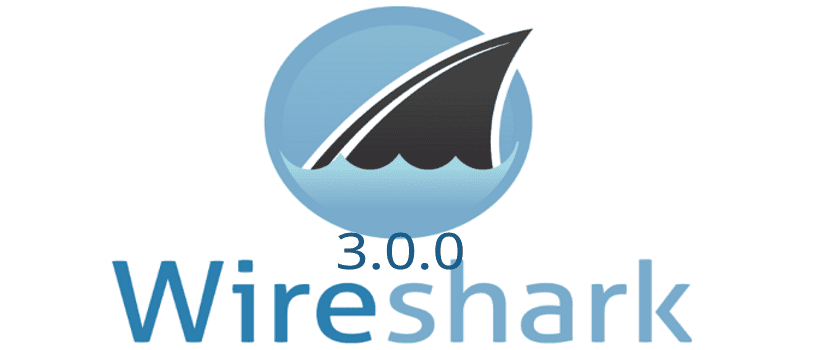

Segundo Post De Bruno
¿Qué es Wireshark?
 Wireshark es una de las herramientas más populares y potentes para el análisis y monitoreo de redes. Es un analizador de protocolos de código abierto que permite capturar y visualizar el tráfico de una red en tiempo real, lo que lo convierte en una herramienta esencial para profesionales de redes y seguridad.
Wireshark es utilizado para diagnosticar problemas de red, analizar paquetes, aprender sobre protocolos y detectar posibles amenazas o actividades sospechosas.
Principales Características
-
Captura de Tráfico en Tiempo Real:
- Permite observar todo el tráfico que pasa por una interfaz de red seleccionada.
- Compatible con múltiples formatos de captura como
.pcap.
-
Análisis Detallado de Protocolos:
- Reconoce y analiza cientos de protocolos como HTTP, TCP, UDP, DNS, ARP, y más.
- Desglosa cada paquete en sus componentes, mostrando encabezados y datos.
-
Filtros Avanzados:
- Permite aplicar filtros para centrarse en paquetes específicos o tipos de tráfico.
- Ejemplo: Mostrar solo tráfico HTTP o paquetes provenientes de una IP específica.
-
Exportación de Datos:
- Guarda capturas en múltiples formatos para análisis posterior.
- Exporta estadísticas de la red en formatos legibles.
-
Interfaz Gráfica Intuitiva:
- Visualización fácil de los datos capturados, con gráficos y tablas.
¿Cómo instalar Wireshark?
-
Descarga:
- Ve al sitio oficial de Wireshark y selecciona la versión adecuada para tu sistema operativo.
-
Instalación:
- Sigue los pasos del asistente de instalación.
- En sistemas Windows, se recomienda instalar Npcap para capturar paquetes.
-
Requisitos del Sistema:
- Windows: 64-bit, 4 GB de RAM mínimo.
- Linux: Disponible en repositorios oficiales (ejemplo:
sudo apt install wiresharken Ubuntu). - Mac: Descarga la versión para macOS desde el sitio oficial.
-
Configuración Inicial:
- Asegúrate de tener permisos de administrador o raíz para capturar tráfico en todas las interfaces.
Ejemplo de Uso: Captura de Tráfico HTTP
Pasos para Capturar Tráfico HTTP:
-
Selecciona una Interfaz de Red:
- Abre Wireshark y selecciona la interfaz de red que deseas monitorear.
-
Inicia la Captura:
- Haz clic en el botón “Start” para comenzar a capturar paquetes en tiempo real.
-
Aplica un Filtro:
- En la barra de filtros, escribe:
http - Esto mostrará solo los paquetes relacionados con tráfico HTTP.
- En la barra de filtros, escribe:
-
Analiza los Paquetes:
- Haz clic en un paquete para ver su desglose en el panel inferior.
- Examina detalles como encabezados, contenido y protocolos involucrados.
-
Detén y Guarda la Captura:
- Haz clic en “Stop” y guarda el archivo en formato
.pcappara análisis posterior.
- Haz clic en “Stop” y guarda el archivo en formato
Consejos de Seguridad
- Captura de tráfico propio: Captura solo en redes donde tienes permiso. El monitoreo de redes sin autorización puede ser ilegal.
- Cifrado: Recuerda que el tráfico HTTPS está encriptado, por lo que no podrás ver el contenido directamente.
Conclusión
Wireshark es una herramienta esencial para cualquier profesional o estudiante interesado en redes y seguridad. Su capacidad para capturar y analizar tráfico en tiempo real lo convierte en un recurso valioso para diagnosticar problemas, entender protocolos y aprender más sobre cómo funcionan las redes.
¿Listo para explorar el tráfico de tu red? ¡Descarga Wireshark y comienza a capturar!